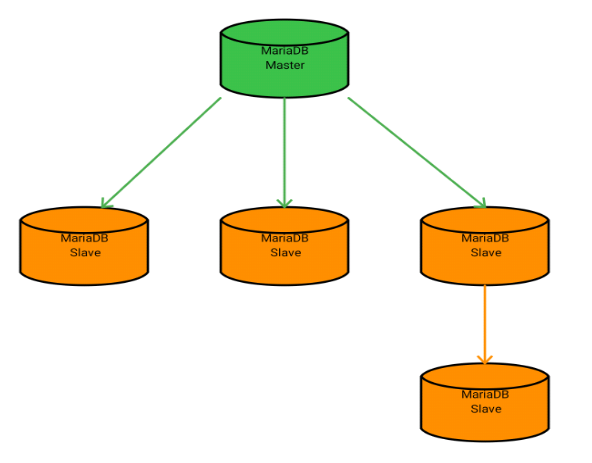
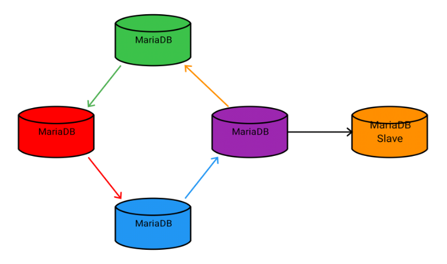
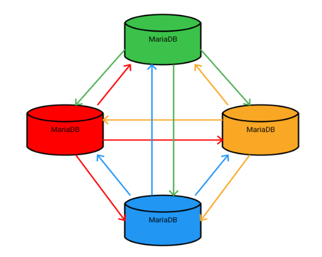
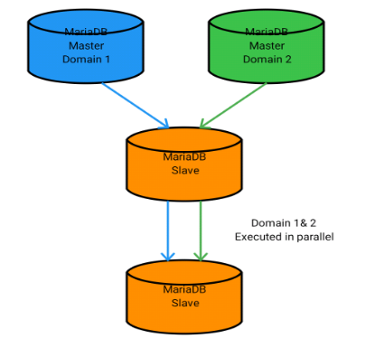
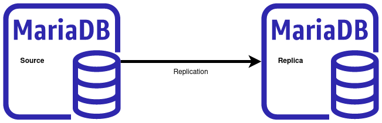
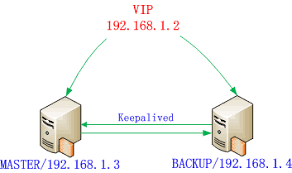

Failover on Maxscale
ارائه کننده:
سید سجاد شاهچراغیان
دست نوشته های یک تازه کار
مقدمه
زمانی فرا میرسد که اطلاعات روی دیتابیس به مرور زمان، به شدت زیاد و سنگین می شوند. ادامه راه با یک نود دیتابیس کاری پر خطر است. پس لازم است تا یکی از راه های ایجاد پایداری برای دیتابیس را پیش گرفت. برای این مهم راه های متفاوتی می باشند. با توجه به این که هدف، دیتابیس Mariadb می باشد پس بر اساس راهکارهای ارائه شده خود mariadb.com عمل می کنیم.
انواع رپلیکیشن در Mariadb
- 
- 
- 
- 
مراحل انجام کار
- راه اندازی رپلیکیشن mariadb master/slave
- راه اندازی maxscale
- راه اندازی failover
- راه اندازی maxscale cluster
mariadb master/slave replication so simple
- تنظیمات سمت mastr
- تنظیمات سمت slave
Master
## /etc/mysql/my.cnf
[mysqld]
bind-address = 0.0.0.0
gtid_strict_mode = on
log-bin = /var/lib/mysql/mysql-bin
binlog_format = row
skip-name-resolve
server-id = 11
log_slave_updates = ON
proxy_protocol_networks = 172.16.1.0/28, 192.168.0.0/23, localhost
MariaDB [(none)]> CREATE USER 'slave1'@'%' IDENTIFIED BY '1234';
Query OK, 0 rows affected (0.001 sec)
MariaDB [(none)]> GRANT REPLICATION SLAVE, REPLICATION SLAVE ADMIN ON *.* TO 'slave1'@'%';
Query OK, 0 rows affected (0.001 sec)
همگام سازی master با slave
mariadb-backup --backup --target-dir=/var/lib/mysql/backup --user=backup-user --password=${PASSWORD}
mariadb-backup --prepare --target-dir=/var/lib/mysql/backup
rsync -azviP /var/lib/mysql/backup app-user@salve-server-ip:/var/lib/mysql
uuid = 514a9fd0-7bf7-11ef-9a1b-0242ac100103
name =
tool_name = mariadb-backup
tool_command = --backup --target-dir=/var/lib/mysql/back --user=root --password=...
...
binlog_pos = filename 'mysql-bin.000002', position '1186', GTID of the last change '0-2-23'
innodb_from_lsn = 0
innodb_to_lsn = 65036
partial = N
incremental = N
format = file
compressed = N
Slave
## /etc/mysql/my.cnf
[mariadb]
bind-address = 0.0.0.0
gtid_strict_mode = on
binlog_format = row
skip-name-resolve
relay-log = mysql-relay-bin
read_only = on
server-id =22
log_slave_updates =ON
proxy_protocol_networks = 172.16.1.0/28, 192.168.0.0/23, localhost
SET GLOBAL gtid_slave_pos="0-2-23";
CHANGE MASTER TO
MASTER_HOST='master-ip',
MASTER_USER='slave1',
MASTER_PASSWORD='1234',
MASTER_LOG_FILE='nysql-bin.000002',
MASTER_USE_GTID=salve_pos,
MASTER_LOG_POS=1186;
START SLAVE;
مراحل انجام کار
- راه اندازی رپلیکیشن mariadb master/slave
- راه اندازی maxscale
- راه اندازی failover
- راه اندازی maxscale cluster
Maxscale
docker-compose file
version: "3"
services:
max:
image: hub.gap.im/ops/mariadb-maxscale:23.02
#network_mode: host
environment:
- TZ=Asia/Tehran
volumes:
- ./conf.d/max.cnf:/etc/maxscale.cnf
ports:
- 192.168.0.99:8989:8989
- 192.168.0.99:3306:3306
CREATE USER 'maxscale'@'%' IDENTIFIED BY 'maxscale-password';
GRANT REPLICA MONITOR, REPLICATION SLAVE, REPLICATION SLAVE ADMIN, FILE, CONNECTION ADMIN, RELOAD, PROCESS, SHOW DATABASES, EVENT, SET USER, READ_ONLY ADMIN, BINLOG ADMIN ON *.* TO 'maxscale'@'%';
GRANT SELECT ON mysql.global_priv TO 'maxscale'@'%';
GRANT SELECT ON mysql.procs_priv TO 'maxscale'@'%';
GRANT SELECT ON mysql.user TO 'maxscale'@'%';
GRANT SELECT ON mysql.db TO 'maxscale'@'%';
GRANT SELECT ON mysql.tables_priv TO 'maxscale'@'%';
GRANT SELECT ON mysql.proxies_priv TO 'maxscale'@'%';
GRANT SELECT ON mysql.roles_mapping TO 'maxscale'@'%';
GRANT SELECT ON mysql.columns_priv TO 'maxscale'@'%';
configuration
[maxscale]
threads=auto
admin_host=0.0.0.0
admin_port=8989
[server1]
type = server
address = 192.168.124.45
port = 3306
proxy_protocol = true
[server2]
[server3]
[Replication-Monitor]
type = monitor
module = mariadbmon
servers = server1,server2,server3
user ='maxscale_admin'
[WriteListener]
type = listener
service = WriteService
[WriteService]
type = service
router = readwritesplit
servers = server1,server2,server3
مراحل انجام کار
- راه اندازی رپلیکیشن mariadb master/slave
- راه اندازی maxscale
- راه اندازی failover
- راه اندازی maxscale cluster
Maxscale Failover

[Replication-Monitor]
type = monitor
module = mariadbmon
servers = server1,server2,server3
user ='maxscale_admin'
password ='m@xsc@le'
#monitor_interval = 500ms
auto_failover = true
auto_rejoin = true
enforce_read_only_slaves = true
replication_user ='slave1'
replication_password ='slave@1234'
cooperative_monitoring_locks = majority_of_running
مراحل انجام کار
- راه اندازی رپلیکیشن mariadb master/slave
- راه اندازی maxscale
- راه اندازی failover
- راه اندازی maxscale cluster
Maxscale Redundancy
کلاستر کردن maxscale در دو مرحله انجام می پذیرد
- همسان سازی تنظمیات maxscale
- تنظیمات keepalived
همسان سازی تنظمیات maxscale
- static configuration:
/etc/maxscale.cnf - dynamic configuration:
/var/lib/maxscale/... - database:
mysql.maxscale_config
config_sync
CREATE TABLE `maxscale_config` (
`cluster` varchar(256) NOT NULL,
`version` bigint(20) NOT NULL,
`config` longtext CHARACTER SET utf8mb4 COLLATE utf8mb4_bin NOT NULL CHECK (json_valid(`config`)),
`origin` varchar(254) NOT NULL,
`nodes` longtext CHARACTER SET utf8mb4 COLLATE utf8mb4_bin NOT NULL CHECK (json_valid(`nodes`)),
PRIMARY KEY (`cluster`)
) ENGINE=InnoDB DEFAULT CHARSET=utf8mb4 COLLATE=utf8mb4_general_ci
CREATE USER 'maxscale_confsync'@'%' IDENTIFIED BY 'secret';
GRANT SELECT, INSERT, UPDATE, CREATE ON `mysql`.`maxscale_config` TO maxscale_confsync@'%';
# /etc/maxscale.cnf
#
[maxscale]
config_sync_cluster = Replication-Monitor
config_sync_user = maxscale_confsync
config_sync_password = secret
maxctrl show maxscale | grep config_sync
│ │ "config_sync_cluster": null,
│ │ "config_sync_db": "mysql",
│ │ "config_sync_interval": "5000ms",
│ │ "config_sync_password": null,
│ │ "config_sync_timeout": "10000ms",
│ │ "config_sync_user": null,
Maxscale High Available
- 192.168.0.99
- 192.168.0.124
- vip -> 192.168.0.7 <- vip
/etc/keepalived/keepalived.conf
vrrp_script health_check {
script "/etc/keepalived/healthcheck.sh"
interval 3
timeout 1
user root
fall 2
rise 2
}
vrrp_instance max-cluster1 {
state MASTER
interface ens18
virtual_router_id 51
priority 101
advert_int 1
virtual_ipaddress {
192.168.0.7/23 dev ens18
}
track_script {
health_check
}
}
/etc/keepalived/healthcheck.sh
#!/bin/bash
ip="192.168.0.99"
pidmaxscale=$(pidof maxscale)
status=$(curl -s -u "admin:mariadb" -X GET http://$ip:8989/v1/monitors | \
jq -r '.data[0].attributes.monitor_diagnostics.primary')
portOpen=$(timeout 1 bash -c "cat < /dev/null > /dev/tcp/$ip/3306"; echo $?)
echo $pidmaxscale
echo $status
echo $portOpen
if [[ (-n $pidmaxscale) && ($status = 'true') && (-n $portOpen) ]]; then
exit 0
else
echo "No maxscale service running..."
exit 1
fi

TODO:
سوالات؟
منابع
- MariaDB MaxScale 2.2: Introducing Failover, Switchover and Automatic Rejoin
- MariaDB MaxScale Configuration Guide
- How to Use the Failover Mechanism of MaxScale
- Setup Maxscale HA using Keepalived and Maxctrl
- MariaDB MaxScale 6.0 Native Clustering
- MariaDB Monitor
- MariaDB automatic failover with MaxScale and Replication Manager